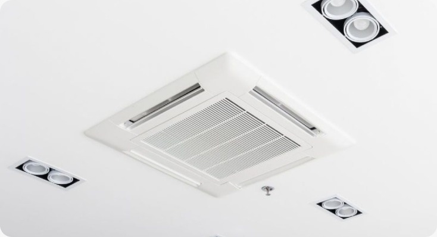
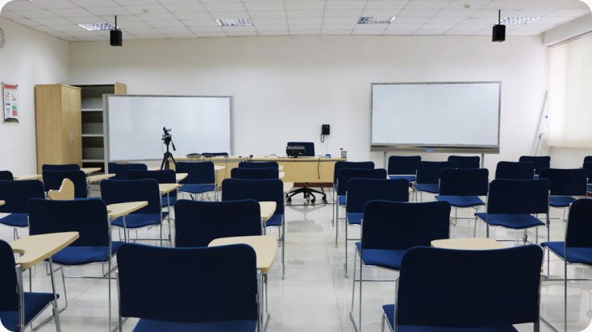

FITK SIBER AHSAN
Fakultas Ilmu Tarbiyah dan Keguruan
UIN Siber Syekh Nurjati Cirebon
Laporkan fasilitas yang bermasalah dengan mudah,
cepat dan transparan. Bersama kita wujudkan kampus
yang lebih nyaman.
Pengaduan
Masuk
Sedang
Ditangani
Fasilitas
Dilaporkan
Pengaduan
Selesai
Dirancang untuk memberikan pelaporan fasilitas
cepat, mudah, transparan
Laporkan fasilitas yang bermasalah
Temukan laporan yang sudah ada
Dukung laporan dengan masalah yang sama
Pantau perkembangan hingga selesai
Proyektor, Kursi, Meja, papan
Internet lambat
Stopkontak, Saklar
AC bocor, AC mati,
AC tidak dingin
CCTV dan keamanan lainnya
Kran, Air mampet, wastafel
Fasilitas ibadah
Fasilitas lift yang bermasalah
Sampaikan masalah fasilitas dengan mengisi laporan dan menambahkan foto sebagai bukti
Admin memeriksa kelengkapan dan kebenaran informasi dalam
laporan
Laporan yang sesuai diteruskan untuk ditindaklanjuti dan
dilakukan perbaikan.
Setelah perbaikan selesai, status laporan diperbarui dan
hasilnya dapat dilihat
Jangan biarkan masalah fasilitas terabaikan.
Sampaikan pengaduan dan bantu menciptakan
lingkungan kampus yang lebih baik.

AC Diproses
Ruang Kelas SelesaiPertanyaan yang Sering Diajukan
Platform untuk melaporkan masalah fasilitas kampus dan memantau proses penanganannya.
Login, pilih Buat Pengaduan, isi detail masalah, tambahkan lokasi serta foto sebagai bukti, lalu kirim.
Status pengaduan dapat dilihat melalui detail pengaduan.